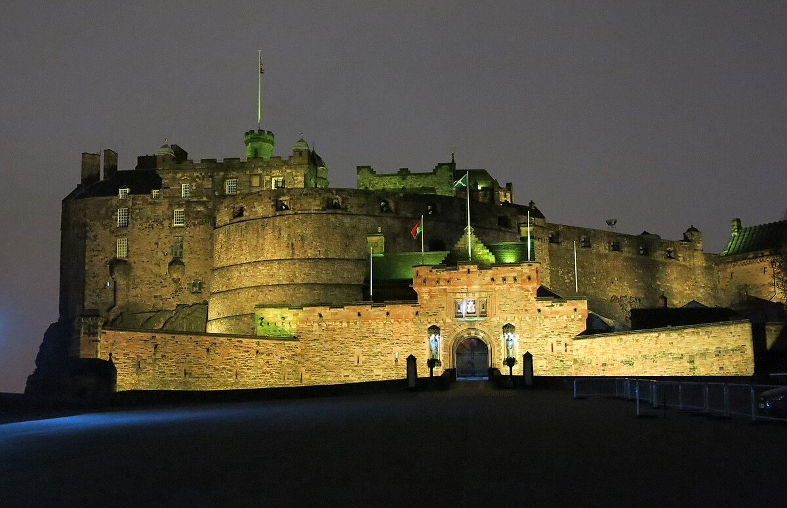
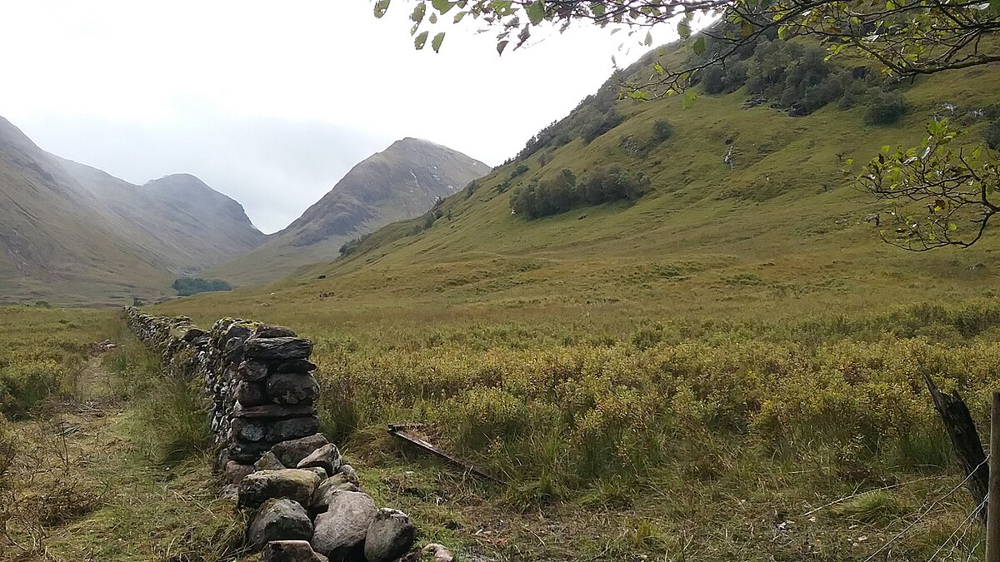
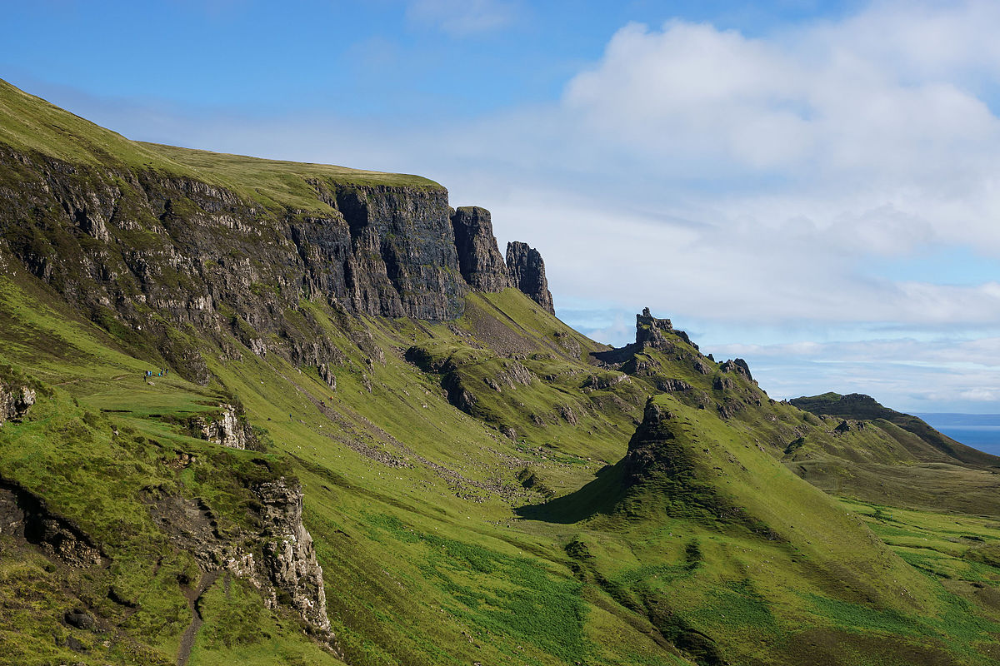
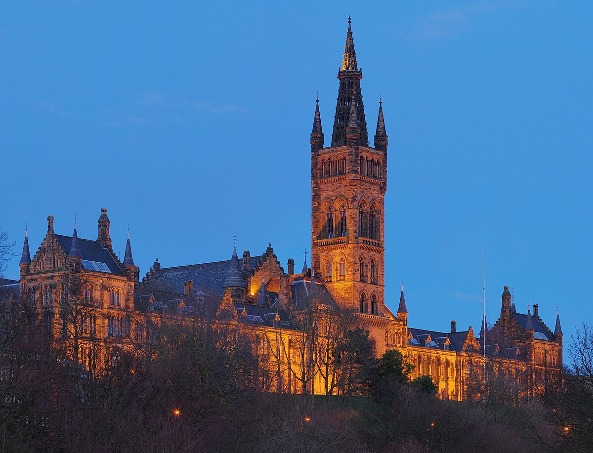

Étape 110 – 12 août • 3 nuits
Pentland Hills au sud pour une mise en jambes sérieuse, Arthur's Seat en ville pour le panorama. Fringe Festival en août : spectacles gratuits dans les rues.
17 km • 960 m D+ • 4-5h
Boucle depuis Threipmuir Reservoir (20 min en voiture). Turnhouse Hill, Carnethy Hill, Scald Law (579 m), East & West Kip. Terrain herbeux, passages raides. Vues sur le Firth of Forth.
Walkhighlands →5 km • 250 m D+ • 1h30
Volcan éteint, 251 m. Vue 360° sur la ville et la mer. Montée par Dunsapie Loch (douce) ou flanc sud (raide, 30 min). Soir d'arrivée idéal.

Étape 213 – 16 août • 3 nuits
Vallée glaciaire au cœur des Highlands. Le plus beau terrain de randonnée d'Écosse. Sentiers pour tous : des balades en forêt aux arêtes de Munros.
14 km • 1385 m D+ • 6-7h
Point culminant d'Argyll (1150 m). 2 Munros. Montée par la Lost Valley, crête vers Bidean, descente par Stob Coire nan Lochan. Pierriers, scramble facile. Carte et boussole indispensables.
Walkhighlands →8 km A/R au col • 540 m D+ • 3-4h
Col à 550 m, point culminant du West Highland Way. Vue sur le Ben Nevis et Buachaille Etive Mòr. Bon sentier balisé. Aller-retour depuis Kingshouse, ou traversée complète vers Kinlochleven (14,5 km).
Walkhighlands →4 km • 335 m D+ • 2-3h
Vallée cachée entre les Three Sisters. Sentier raide et rocheux, scramble léger, puis vallée suspendue spectaculaire. Court mais intense.
Walkhighlands →5 km • 50 m D+ • 1h30
Boucle autour du lac en forêt + sentier vers Signal Rock le long de la rivière Coe. Bancs, plat. Balade familiale, fin de journée, ou jour de repos.

Étape 316 – 19 août • 3 nuits
Formations rocheuses spectaculaires, piscines turquoise, falaises maritimes. Arrêt Eilean Donan Castle sur le trajet. Haute saison : partir tôt le matin.
8,2 km • 940 m D+ • 5-6h
Munro isolé (928 m), le plus accessible des Cuillin. Vue exceptionnelle sur toute la crête des Cuillin noirs et Loch Slapin. Bon sentier puis pierrier raide, scramble léger au sommet.
Walkhighlands →6,8 km • 380 m D+ • 2h30-3h
Le plus grand glissement de terrain d'Europe. Paysage lunaire : aiguilles, plateaux cachés (The Table, The Prison, The Needle). Sentier bien tracé.
Walkhighlands →3,7 km A/R • 300 m D+ • 1h30
Aiguille rocheuse la plus connue de Skye (48 m). Panorama 360° sur l'île et les Hébrides. Sentier aménagé. Combinable avec le Quiraing (30 min de route).
Walkhighlands →2,4 km A/R • plat • 1h
Piscines naturelles turquoise au pied des Cuillin. Baignade possible (~12°C). Arriver avant 9h en août.
Walkhighlands →2,8 km A/R • 100 m D+ • 1h
Phare à la pointe ouest de Skye. Escaliers et sentier côtier. Coucher de soleil exceptionnel (jour jusqu'à 21h en août). Phoques et dauphins possibles.
Walkhighlands →
Étape 419 – 21 août • 2 nuits
Musées gratuits, architecture victorienne, quartier West End. Restitution du véhicule à l'arrivée.
Gratuit • 2-3h
22 galeries : Dalí, Rembrandt, fossiles, armures. Spitfire suspendu au plafond. Orgue joué à 13h. Un des meilleurs musées gratuits de Grande-Bretagne.
3 km • plat • 1h
Promenade le long de la rivière Kelvin. Université de Glasgow : bâtiment néo-gothique 1870, évoque Poudlard. Jardin botanique à proximité.
Location Édimbourg, restitution Glasgow. Conduite à gauche. Routes Highlands souvent à voie unique avec passing places.
EDI → Glen Coe : 2h30
Glen Coe → Skye : 2h
Skye → Glasgow : 5h
12-18°C. Pluie fréquente. Vêtements imperméables indispensables. Jour jusqu'à 21h environ. Midges (moucherons) dans les Highlands : répulsif Smidge.
Équivalent IGN : Ordnance Survey. Même échelle, courbes de niveau.
OS Maps — consultation en ligne.
Walkhighlands — fiches et traces GPS.
Hébergement : 150-300£/nuit
Location véhicule 11j : 500-700£
Carburant : ~150£
Alimentation : 60-100£/jour (4 pers.)
Entrées : musées gratuits, châteaux ~20£/adulte
Un avis sur l'itinéraire, un hébergement, une rando ? Connectez-vous avec GitHub pour commenter.